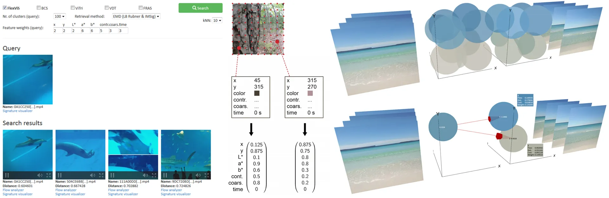

Building a Content-Based Multimedia Search Engine I: Quantifying Similarity

This is part 1 in a series of tutorials in which we learn how to build a content-based search engine that retrieves multimedia objects based on their content rather than based on keywords, title or meta description.
- Part I: Quantifying Similarity
- Part II: Extracting Feature Vectors
- Part III: Feature Signatures
- Part IV: Earth Mover’s Distance
- Part V: Signature Quadratic Form Distance
- Part VI: Efficient Query Processing
The explosion of user-generated content on the internet during the last decades has left the world of querying multimedia data with unprecedented challenges. There is a demand for this data to be processed and indexed in order to make it available for different types of queries, whilst ensuring acceptable response times.
An arguably important task is the retrieval of multimedia objects (e.g. images or videos) that are visually similar to a certain query object (e.g. a query image or a query video). We define two multimedia objects to be visually similar if they depict contents that "look similar" to humans. So far, this task has gained comparatively little research recognition.
Most of the major search engines or content suggestion engines only allow for text-based queries and the search only considers metadata such as title, description text or user-specified tags. The content of the multimedia objects is not taken into account. Such systems are very limited with respect to the types of queries that are possible, and with respect to the actual relevance of the retrieved results.
In this series of tutorials, I introduce a method for retrieving visually similar multimedia objects to a specified query object. This method is based on so-called feature signatures, which comprise an expressive summary of the content of a multimedia object that is significantly more compact than the object itself, allowing for an efficient comparison between objects. This method is applicable to virtually all kinds of multimedia objects. In the course of this tutorial, we’ll take content-based video similarity search as our main example. However, it should be clear how to adapt this method to your particular needs.
Quantifying Similarity
This section introduces some fundamental preliminaries for the problem of retrieving similar multimedia objects to a given query object. We will review how similarity between multimedia objects can be formalized and which types of queries exist with respect to this formalization.
In order to retrieve similar multimedia objects to a given query object, we need a way to compare the query object to the database objects and quantify the similarity or dissimilarity numerically. There are many ways in which similarity or dissimilarity between two objects can be measured, and it is highly dependent on the nature of the compared objects and on the aspects which we want to compare. For example, videos could be compared with respect to their visual content, their auditory content or meta-data such as the title or a description text.
The most common way to model similarity is by means of a distance function. A distance function assigns high values to objects that are dissimilar and small values to objects that are similar, reaching 0 when the two compared objects are the same. Mathematically, a distance function is defined as follows:
Let $X$ be a set. A function $\delta : X \times X \rightarrow R$ is called a distance function if it holds for all $x, y \in X$:
- $\delta(x, x) = 0$ (reflexivity)
- $\delta(x, y) = \delta(y, x)$ (symmetry)
- $\delta(x, y) \geq 0$ (non-negativity)
When it comes to efficient query processing, as we will see later, it is useful if the utilized distance function is a metric.
Let $\delta : X \times X \rightarrow R$ be a distance function. $\delta$ is called a metric if it holds for all $x, y, z \in X$:
- $\delta(x, y) = 0 \Leftrightarrow x = y$ (identity of indiscernibles)
- $\delta(x, y) \leq \delta(x, z) + \delta(z, y)$ (triangle inequality)
An alternative way to model similarity between two objects is by means of a similarity function, which assigns small values to objects that are dissimilar and larger values to objects that are more similar, reaching its maximum when the two compared objects are the same (cf. [BS13]).
Let X be a set. A function $s : X \times X \rightarrow \mathbb{R}$ is called a similarity function if it is symmetric and if it holds for all $x, y \in X$ that $s(x, x) \geq s(x, y)$ (maximum self-similarity).
Query Types
Once we have modeled the similarity for pairs of multimedia objects by means of a distance function, we can reformulate the problem of retrieving similar objects to the query object by utilizing such a function. A prominent query type is the so-called range query, which retrieves all database objects for which the distance to the query object lies below a certain threshold. The formal definition is given below (adopted from [BS13]).
Let $X$ be a set of objects, $\delta : X \times X \rightarrow R$ be a distance function, $DB \subseteq X$ be a database of objects, $q \in X$ be a query object and $\epsilon \in \mathbb{R}$ be a search radius. The range query $range(q, \delta, X)$ is defined as
$range_\epsilon(q, \delta, X) = \{x \in X \; | \; \delta(q, x) \leq \epsilon\}$
For range queries, it is hard to determine a suitable threshold $\epsilon$ to yield a result set of a desired size. When $\epsilon$ is too low, the result set might be very small or even empty. On the other hand, when choosing it too large, the result set might come near to including the entire database. This problem can be solved by issuing a k-Nearest Neighbor Query (short: kNN query) instead. In this query type, we specify the desired number of retrieved objects $k$ instead of a distance threshold. If we assume that the distances between the query object and the database objects are pairwise distinct, the k-Nearest Neighbors are the $k$ objects that have the smallest distance to the query object. The formal definition is given below (adopted from [SK98]).
Let $X$ be a set of objects, $\delta : X \times X \rightarrow R$ be a distance function, $DB \subseteq X$ be a database of objects, $q \in X$ be a query object and $k \in \mathbb{N}, k \leq |DB|$. We define the k-Nearest Neighbors of $q$ w.r.t. $\delta$ as the smallest set $NN_q(k) \subseteq DB$ with $|NN_q(k)| \geq k$ such that the following holds:
$\forall o \in NN_q(k), \forall o^\prime \in DB − NN_q(k) : \delta(o, q) < \delta(o^\prime , q)$
Our goal now is to devise a distance function that reflects human judgement of similarity. In the next section, we will learn how to extract features from multimedia objects, which are sets of vectors that characterize the content of that object. Continue with the next section: Extracting Feature Vectors.
References
[BS13] Christian Beecks and Thomas Seidl. Distance based similarity models for content based
multimedia retrieval. PhD thesis, Aachen, 2013. Zsfassung in dt. und engl. Sprache; Aachen, Techn.
Hochsch., Diss., 2013.
[SK98] Thomas Seidl and Hans-Peter Kriegel. Optimal multi-step k-nearest
neighbor search. In ACM SIGMOD Record, volume 27, pages 154–165. ACM, 1998.